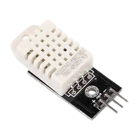

DHT22 adalah sensor digital yang digunakan untuk mengukur suhu dan kelembapan udara dengan tingkat akurasi yang cukup tinggi.
| Pin | Fungsi |
|---|---|
| VCC | Memberikan catu daya 5V |
| DATA | Mengirim data suhu dan kelembapan |
| GND | Ground |
| HC-SR04 | Arduino |
|---|---|
| VCC | 5V |
| GND | GND |
| DATA | D2 |
Klik tombol berikut untuk mencoba simulasi HC-SR04.
Jalankan SimulasiSaat simulasi dijalankan, sensor DHT22 akan mengukur suhu dan kelembapan udara. Nilai suhu ditampilkan dalam satuan derajat Celcius (°C), sedangkan kelembapan ditampilkan dalam satuan persen (%). Ketika slider suhu atau kelembapan diubah, nilai pada Serial Monitor juga akan berubah.